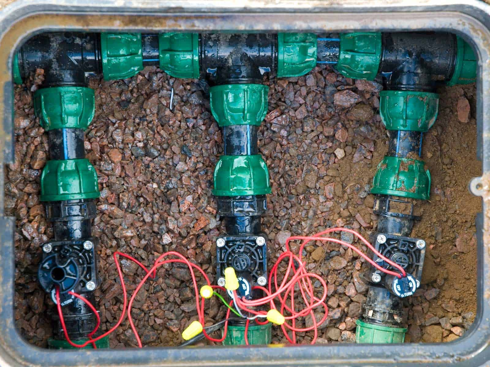

Professional Lawn Sprinkler System Contractors
Introduction
Lawn sprinkler system contractors are an essential part of the whole system to keep your lawn and landscape beautiful and healthy. Vergel Irrigation Limited is an expert in providing a satisfaction guarantee for your irrigation needs. With teams of professionals, advanced technology, and dedication to customer service, our contractors guarantee that your lawn receives the care it needs.

Why Choose Professional Lawn Sprinkler System Contractors?
When you hire a professional lawn sprinkler system contractor for installation and maintenance, you can be confident in the quality of your work. These contractors have the skills and experience to design efficient irrigation systems that save water while keeping your lawn lush. At Vergel Irrigation Limited, our contractors consider your landscape's particular needs and create a unique solution.
Benefits of Hiring Expert Lawn Sprinkler System Contractors
- Efficient water management
- Customized Irrigation Solutions
- Quality Installation and Maintenance
- Design and Installation
- System Maintenance and Repairs
- Seasonal Adjustments
- Expertise and Experience
- High-Tech
- Customer Satisfaction
Professional lawn sprinkler system contractors keenly understand the importance of water conservation. So, they create systems that deliver water evenly, stopping overwatering and waste. That way, your lawn stays healthy while your water bills are minimal.
Every lawn is unique, and our lawn sprinkler system contractors customize services to suit your landscape's particular requirements. From choosing suitable sprinkler heads to finding an ideal watering schedule, Vergel Irrigation Limited provides services dedicated to lawn health.
Proper installation is vital to the functioning of your irrigation system. Our lawn sprinkler system contractors are trained in efficient system installation so that it will function well in the long term. Regular checks by our team will maintain your system in good shape, preventing costly repairs from coming up.
Services Offered by Lawn Sprinkler System Contractors
Our lawn sprinkler system contractors begin with an extensive evaluation of your property. This typically involves checking whether your lawn has been landscaped according to the particular precision theory, which is a requirement in size, motive, and style, as well as analyzing soil type, plant types, and landscape layout. Building upon the results of our analysis, our lawn sprinkler system contractors design a system that effectively waters your plants throughout their lives and stays within the amount of water provided. This principle puts into practical effect the old Chinese proverb, "Water before there is much growth; when there is already growth, let it be underfoot." Constructed according to the required specifications for every part, Our sprinklers are metered and timed for each zone to ensure that water is distributed evenly and effectively around the landscape--and not poured down on just one plant throughout its life.
Installing a system that covers the lawn from end to end and makes efficient use of water is the work of experts who prevent any adverse effect on your lawn. Our sprinkler systems are installed according to strict codes, guidance technologies, and modern experience --because they must be consistent with your pattern of life while at the same time staying out of sight wherever they may be buried in your lawn.
It needs to be regularly maintained to keep your sprinkler system in working order. Our lawn sprinkler system contractors offer comprehensive maintenance services, including system checks, adjustments, and cleaning. When things go wrong, our team completes repairs immediately - so your system can carry on without interruptions.
Different seasons require different watering schedules. Our lawn sprinkler system contractors change your system's settings according to the seasons so your lawn receives just the right amount of water each year. It is a preemptive approach that stops over-watering during rainy seasons and supplies a generous dose of water for dry periods.
The Vergel Irrigation Limited Difference
At Vergel Irrigation Limited, our lawn sprinkler system contractors have worked in the industry for many years. This experience enables them to tackle any project, whether a residential garden or an office building landscape. We do everything to ensure quality: nothing goes even close-your grasses are left unmown!
Our lawn sprinkler system contractors incorporate State-of-the-Art technology to design and install irrigation systems. Intelligent controllers and weather sensors are used to schedule water. This not only increases efficiency but also contributes towards environmental protection measures made by such industries.
Our irrigation contractors always put the customer first. They work closely with clients to understand their preferences and needs. We offer detailed consultations and transparent price levels, ensuring that our services are in keeping with your conscious expectations and pocketbook-appropriate. Morning is the most critical time for lawn sprinkling. This helps plants store moisture for tomorrow when temperatures again rise, and you won't need as much watering. Keep your sprinkler set at an angle, with the wobblers turning outward away from the track, cover stakes only partially in the ground, and activate drip twice to four times a week, depending on weather conditions. Determine which way the soil is sloping: If west, do not sprinkle in the afternoon; if north or south, it doesn't matter, but sprinkle early morning during summer. When looking for lawn sprinkler system contractors, ensure they have the qualifications. Verify licensing and certification as a must. Experience in the industry is also an important consideration. After all, an old hand at every job is less likely to be way off course than a novice contractor who just started earlier this morning. Read Reviews and Testimonials. Customer feedback provides essential insight into a contractor's reliability and quality. Now would be a good time to check online reviews and testimonials where trust isn't enough. Vergel Irrigation Limited is proud of its positive customer feedback, serving as a testament to our excellence in this line of business. Request a Detailed ProposalBefore lawn sprinkler system contractors are employed, ask them for a comprehensive proposal that outlines the nature of work, costs, and timetable. This type of transparency aids in informed decision-making and ensures no surprises once work begins. Frequently Asked Questions About Lawn Sprinkler Systems: How often should I water my lawn? The right amount of water should be determined by factors such as climate, type of soil, and turf species. Our lawn sprinkler system contractors advise watering every few days during growth periods(years); giving deep water helps promote a healthy root system. Can I install a sprinkler system myself? While DIY installation is possible, hiring a professional to do the job ensures that your lawn sprinkler system design will work at its best and be durable. His experience helps you avoid pitfalls common to beginners and ensures you have an efficient running machine. How do I maintain my sprinkler system? For a long life, you will need regular maintenance on both your part and that of our lawn sprinkler system contractors . This should include checking for leaks, cleaning sprinkler heads, and altering settings according to season. Vergel Irrigation Limited provides comprehensive maintenance packages to keep your system in peak condition. Sustainable Practices by Lawn Sprinkler System Contractors Water-Efficient Technologies The intelligent use of water-saving technologies, such as drip irrigation methods and intelligent controllers, is something that our lawn sprinkler system contractors are particularly interested in. These systems maximize water saving while ensuring your grass gets enough water, aiming to be sustainable.

Environmental Protection Vergel Irrigation Limited prioritizes sustainable irrigation installation, and we use eco-multimedia materials. Our sprinkler lawn contractors pick up robust and environmentally responsible parts to reduce our projects' ecological footprint. Education and AwarenessWe strive to educate our clients about how to maintain environmental irrigation on their own. Our sprinkler lawn system contractors offer water-digit tips and suggestions for cooperative lawn care, giving you the power to manage your healthy environment personally. Defined by Contractors for Lawn Sprinkler SystemCommon ProblemsLeakage and CloggingThe efficiency of your irrigation system can be affected by leaks or clogs. Our sprinkler lawn contractors are seasoned at determining causes and cleaning up after these problems, placing your system in prime working order again. Alternating Areas of Water DistributionIf some parts of your lawn receive more than enough water and others are dry, growth will be uneven. We recalibrate system settings and sprinkler head angles to equalize all the water you need on land. Costly Repairs lawn sprinkler system contractors Must Regularly Carry Out Contractors for lawn sprinkler systems by carrying out periodic maintenance and identifying potential problems before they become expensive. Then, our service professionals ensure that such issues are resolved promptly so you have a trouble-free operation and an extended lifetime for your system. Creating Water Usage Efficiency Maintaining your sprinkler system results in good water efficiency. Our sprinkler lawn contractors adjust their settings and check for leaks, which helps maximize water usage with the least waste possible. Making the lawn flourishMaintaining your sprinkler system contributes to the well-being of your whole yard. Our sprinkler lawn contractors pay attention to your system's needs to run smoothly, producing dominantly lively landscapes twelve months a year.
Conclusion
Choosing the right lawn sprinkler contractors is crucial to maintaining landscape beauty and sound design. Vergel Irrigation Limited offers its best expert services: experience, advanced technology, and a customer-centric philosophy. If you want installation, maintenance, or repairs, come to our contractor -- he will deliver top-quality results that surpass expectations. Moreover, Vergel Irrigation Limited is for all your irrigation needs. Our managed lawns add back the benefits of a professionally run sprinkler system.